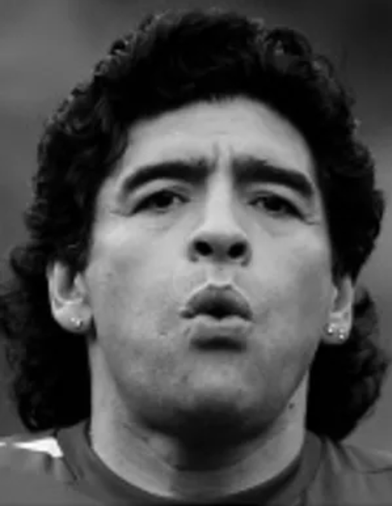
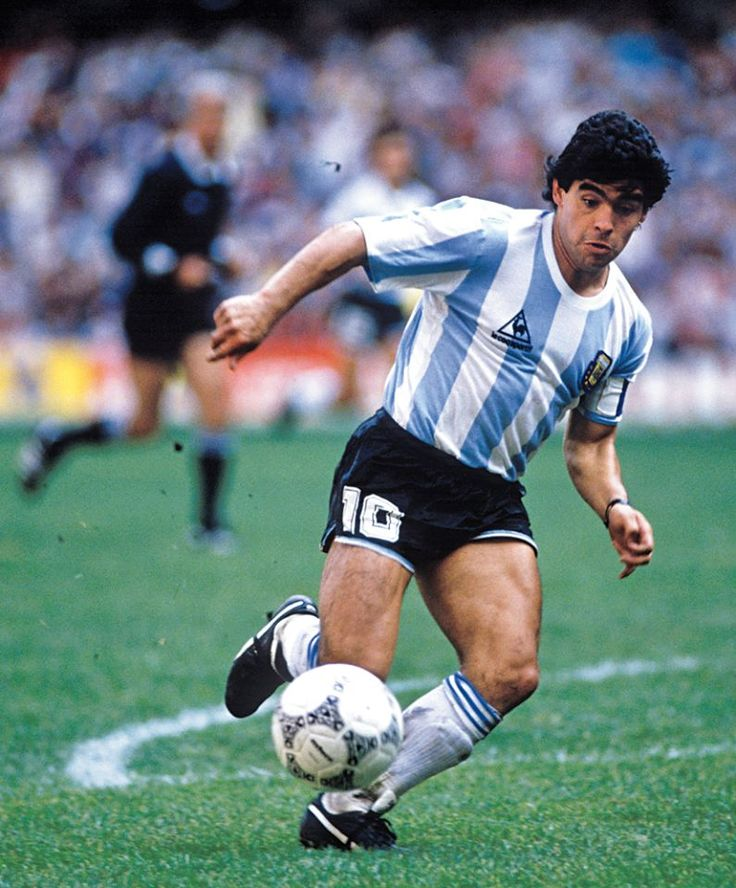
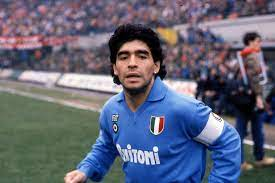
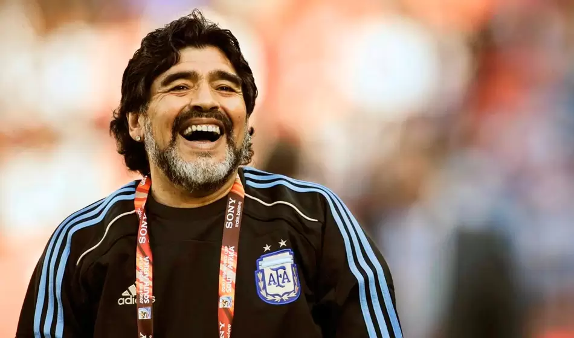
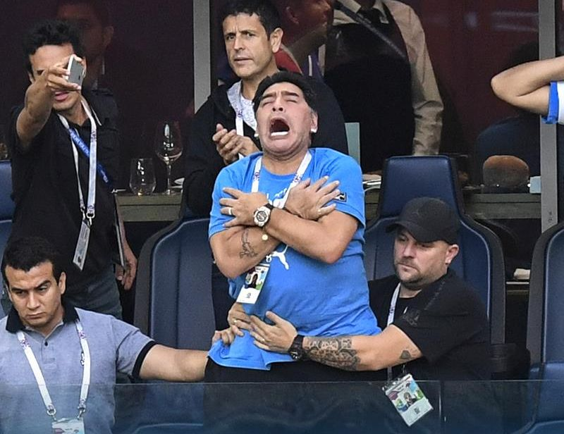
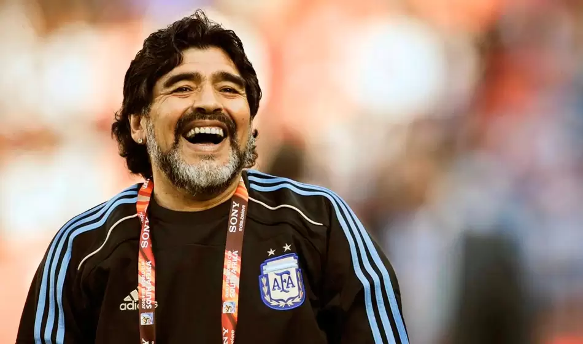
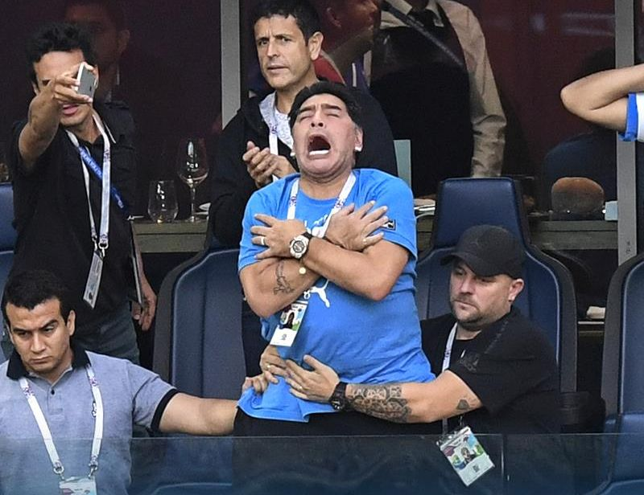
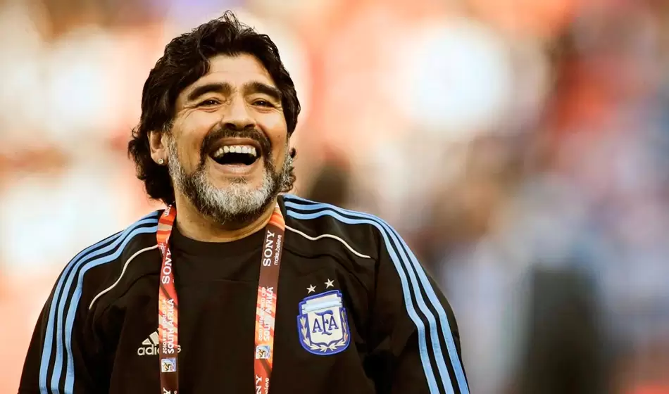
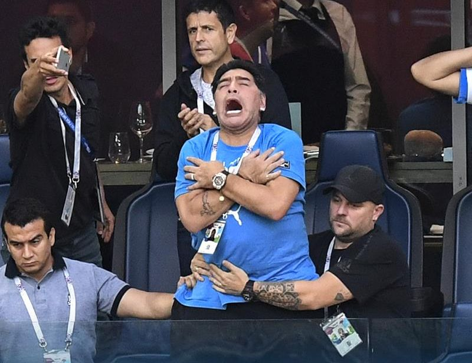

Diego Armando Maradona
Futbolista profesional · Director técnico · Conductor
Capitán histórico y referente del fútbol mundial. Campeón del Mundo 1986 con la Selección Argentina. Trayectoria destacada en Napoli, Barcelona, Boca Juniors y Argentinos Juniors. Experiencia como DT de la Selección Argentina y conductor televisivo.
Experiencia profesional destacada
- 2008–2010 — Selección Argentina (DT). Conducción en Eliminatorias y Mundial FIFA 2010.
- 2005 — “La Noche del 10” (Canal 13). Conductor y anfitrión con invitados internacionales.
- 1984–1991 — Napoli (Italia). Capitán y líder. 2 ligas (1987, 1990), Copa Italia (1987), Copa UEFA (1989).
- 1982–1984 — FC Barcelona (España). Campeón de Copa del Rey y Copa de la Liga.
- 1977–1994 — Selección Argentina (Jugador). Campeón Mundial 1986; subcampeón 1990; +90 partidos.
- 1981–1982 — Boca Juniors (Argentina). Campeón Metropolitano 1981.
- 1976–1981 — Argentinos Juniors (Argentina). Debut profesional y máximo goleador de torneos locales.
Educación y formación
- 1998–1999 — AFA. Curso de dirección técnica.
- 1969–1976 — Escuela de Fútbol Argentinos Juniors. Formación juvenil.
Capacidades relacionales y organizativas
Liderazgo y capitanía de equipos. Comunicación carismática en medios y eventos públicos. Mentoría de jóvenes talentos.
Competencias técnicas
Estrategia y táctica futbolística. Gestión de alto rendimiento. Representación internacional y manejo de prensa. Docencia futbolística y clínicas deportivas.
Galería de logros
Una selección de imágenes que resumen los logros conseguidos.



 




